约 个字 行代码 预计阅读时间 分钟
Real-Time Ray Tracing
Real-Time Ray Tracing
Basic Idea
RTR 领域某笑话——人们宣称：“光线追踪是未来，并且将一直会是未来。”
不过 2018 年，NVIDIA 宣布了 GeForce RTX 系列（图灵架构(Turing architecture)）显卡，老黄说会开启一个 2500 亿美元的市场（现在来看，他根本没想到 AI 会让 NVIDIA 的年收入接近这个数字）。
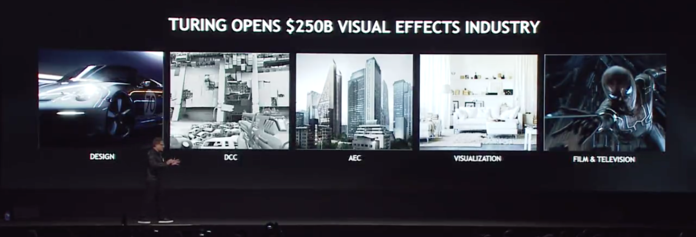
RTX 能做以下事情（一些关于 RTRT（实时光线追踪）的 demo）：
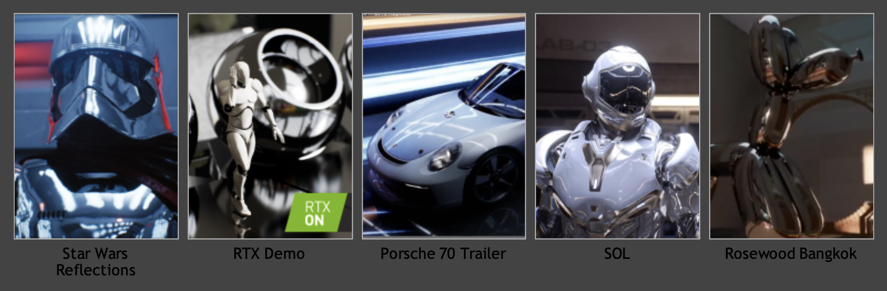
实际上，RTX 能实现高级的光线追踪效果：
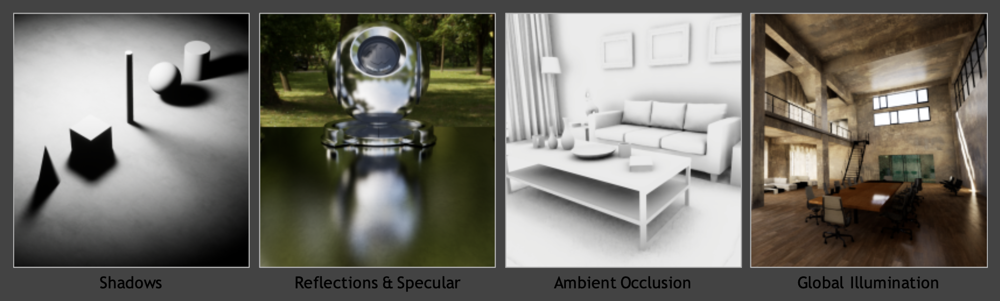
之所以 RTX 系列显卡在光线追踪上取得突破性进展，是因为它有一些有利于提升光线追踪的硬件，比如张量核心(tensor core)等。它能做到每秒追踪 10G（100 亿）根光线，相当恐怖！
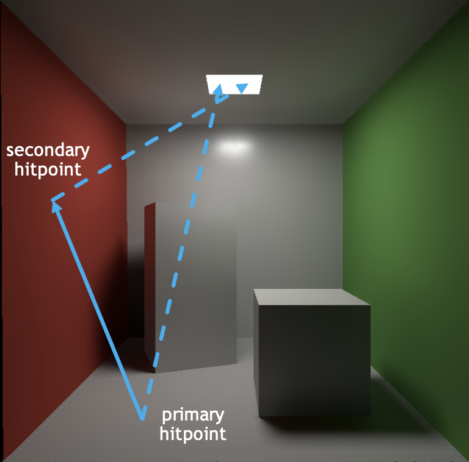
在实时应用中，这就对应了一个每像素采样(sample per pixel, SPP)。单个 SPP 的路径追踪包括：
- 1 次光栅化（主）
- 1 条光线（主可见性）
- 1 条光线（二次弹射）
- 1 条光线（次可见性）
RTRT 本身其实并没有多大创新，它的突破来自硬件能力的升级。由于路径追踪用的是蒙特卡洛积分法，自然无法避免噪点问题。所以 RTRT 的一项关键技术是降噪(denoising)。
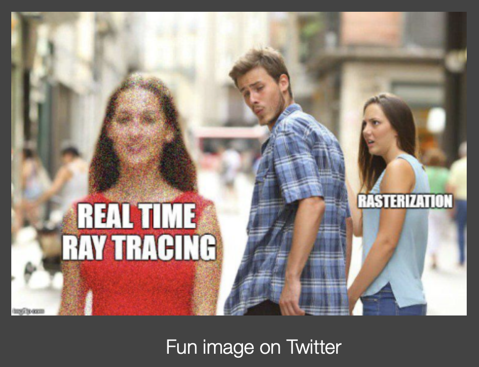
SOTA（其实是 19 年）的降噪例子
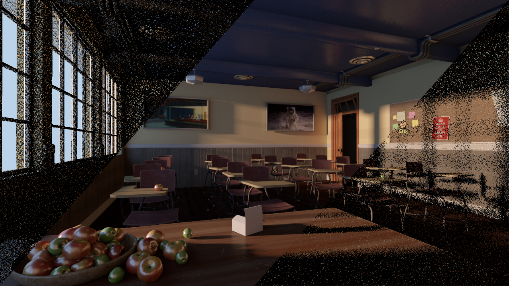
Motion Vector
在介绍具体方法前，我们先明确一下目标：
- 质量：不能有过度模糊和瑕疵，保留所有细节...
- 速度：对一个帧降噪（这只是渲染的一个小环节）的速度 <2ms
但实际上要同时达成上述两个目标是做不到的事。学术界的相关研究有：
- 剪切滤波(shear filtering)系列：SF、AAF、FSF、MAAF 等
- 其他离线滤波(offline filtering)方法：IPP、BM3D、APR 等
- 深度学习系列：CNN、自动编码器等
在业界的解决方案中，最重要的思想是时间(temporal)：
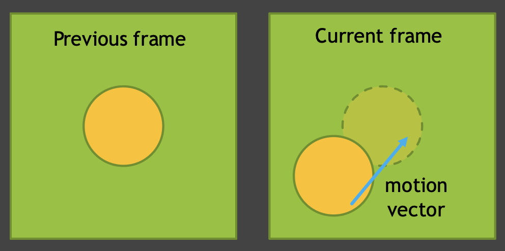
- 假设当前帧已经降过噪了，那我们就可以复用这一帧
- 使用运动向量(motion vector)来寻找前一个位置
- 本质上是增加了 SPP
几何缓冲区(G-buffer)
- 渲染过程中免费获取的辅助信息（不是 100% 的免费，但生成 G-buffer 是一个轻量级的操作）
- 通常包括世界坐标、每像素深度、法线、世界坐标等仅限于屏幕空间的信息
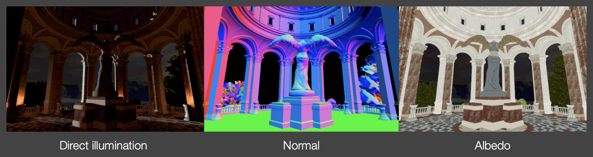
记当前帧为 \(i\)，那么上一帧就是 \(i - 1\)。现在就要找第 \(i - 1\) 帧中的哪个像素包含了和第 \(i\) 帧中像素 \(x\) 相同的位置或点。
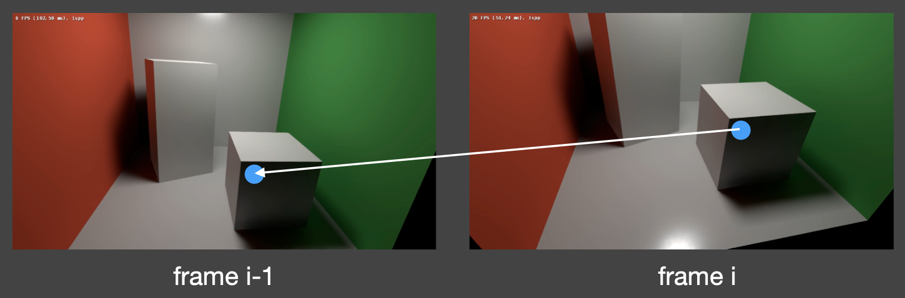
这便是反向投影(back projection)或者说求运动向量(motion vector)，具体操作如下：
- 如果世界坐标 \(s\) 存在 G-buffer 中，那么可直接拿来用
- 否则 \(s = M^{-1}V^{-1}P^{-1}E^{-1}x\)（计算时仍需带有 \(z\) 分量；\(E\) 为视口变换）
- 由于运动已知：\(s' \xrightarrow{T} s\)，因此 \(s' = T^{-1} s\)
- 将第 \(i - 1\) 帧中的世界坐标投影到屏幕上：\(x' = P'V'M's'\)
注：加撇号的表示上一帧的东西。
Temporal Accumulation / Filtering
记号约定
- \(\sim\)：未滤波的
- \(\text{-}\)：滤波好的
对于当前帧（第 \(i\) 帧）：
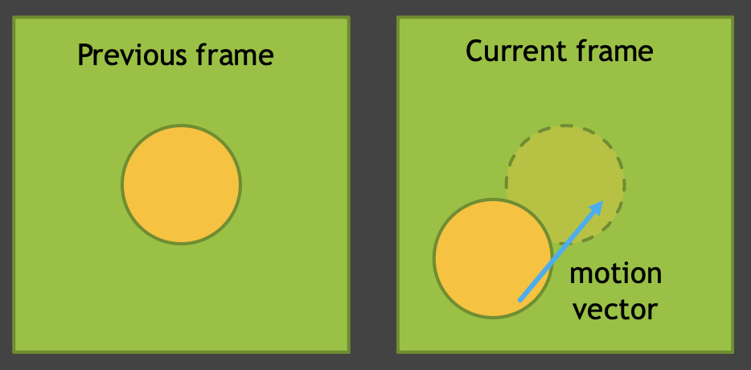
两行公式分别对应空间和时间上的滤波。其中 \(\alpha\) 的取值在 0.1 到 0.2 之间，换句话说就是 80-90% 的贡献来自上一帧。
效果
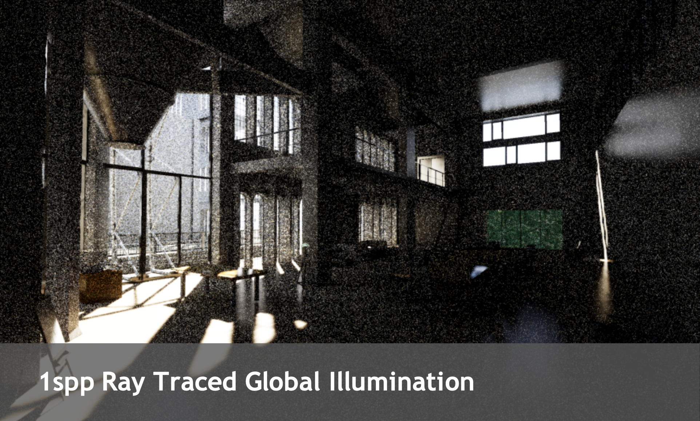
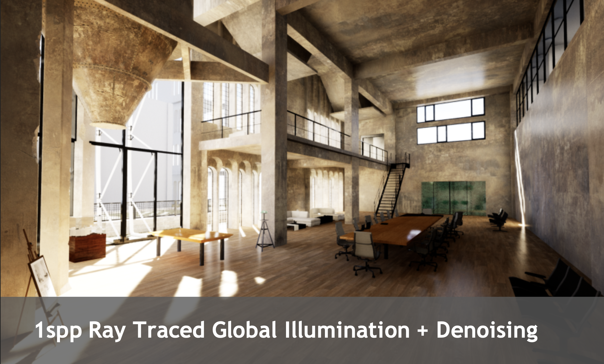
可以看到去噪前的渲染结果较暗，这是因为有噪点时，像素值上下浮动，可能存在像素值超过 255 的情况，此时会被裁剪到 255 这个值，因此那些特别亮的点就会变暗，整体也会变暗。
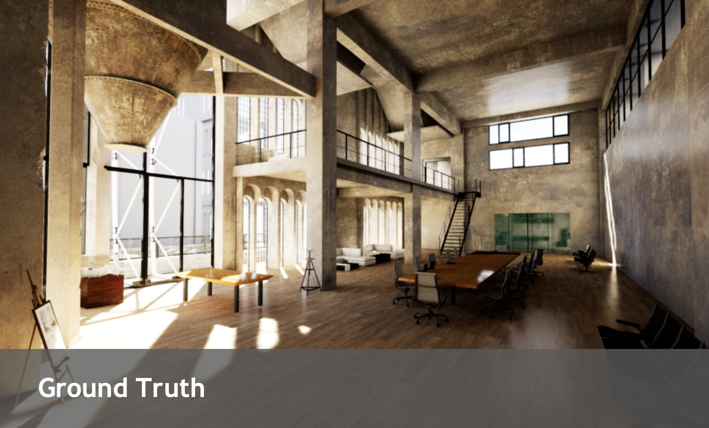
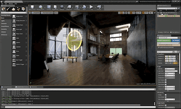
Failure Cases
但这一方法也有失效的时候，比如：
-
切换场景或镜头（需要有个预热期(burn-in period)累积几帧）
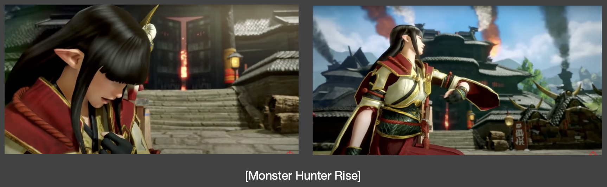
-
在走廊里倒着走（屏幕空间问题）
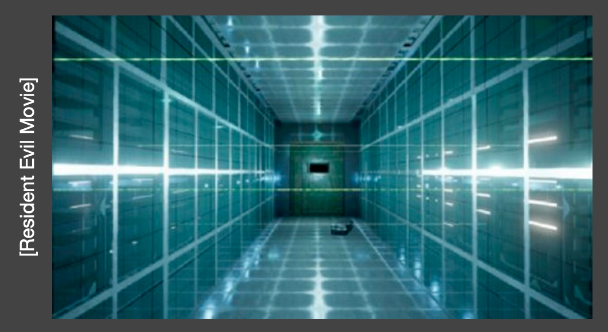
-
突然出现的背景（去遮挡(disocclusion)）
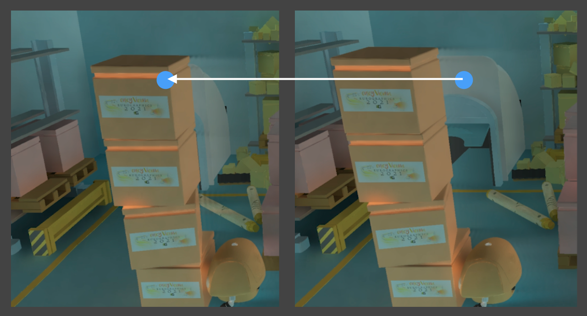
- 如果无视这一问题，就会带来拖尾(lagging)的效果
例子
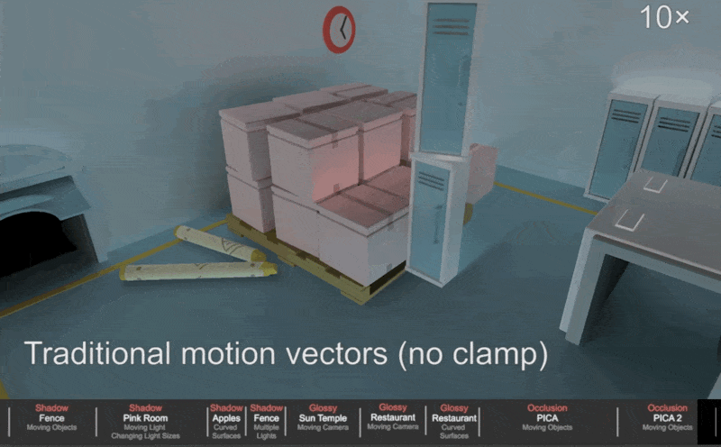
解决方法有：
- 约束(clamping)：将“上一帧的值”向当前帧的范围进行限制
- 检测(detection)：
- 使用如对象 ID 等来检测时间性失败
- 以二值或连续形式调整 \(\alpha\)
- 可能得加强/扩大空间滤波
问题：重新引入噪声（现在更依赖于当前帧，而上一帧才是没有噪点的）
例子
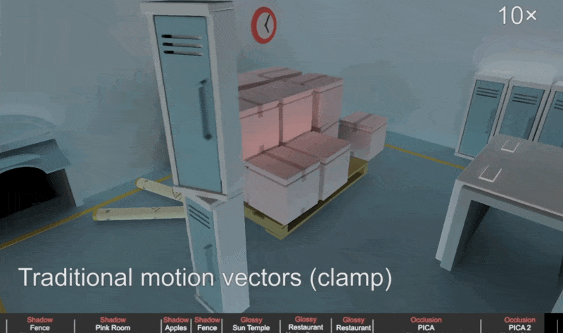
该方法在着色上也有可能会失效：
-
考虑带有移动光源的“栅栏”场景，其中阴影的运动向量为 0，因为柱子几何位置关系没发生变化，这样的结果是阴影拖尾严重
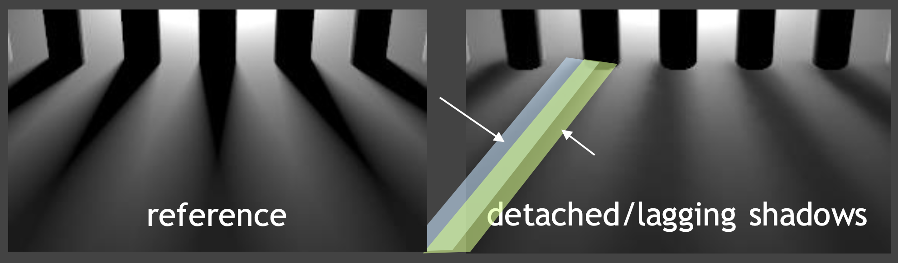
例子
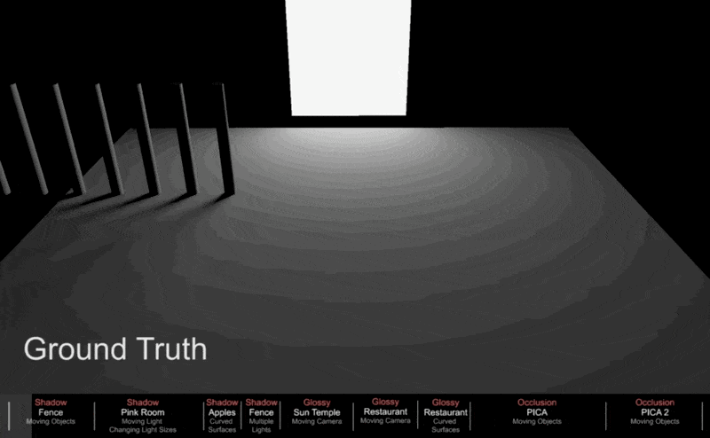
-
考虑移动椅子，其中光泽反射图像(glossy reflected images)的运动向量也为 0，因为地板没有动，地板上的点的几何属性自然没发生变化
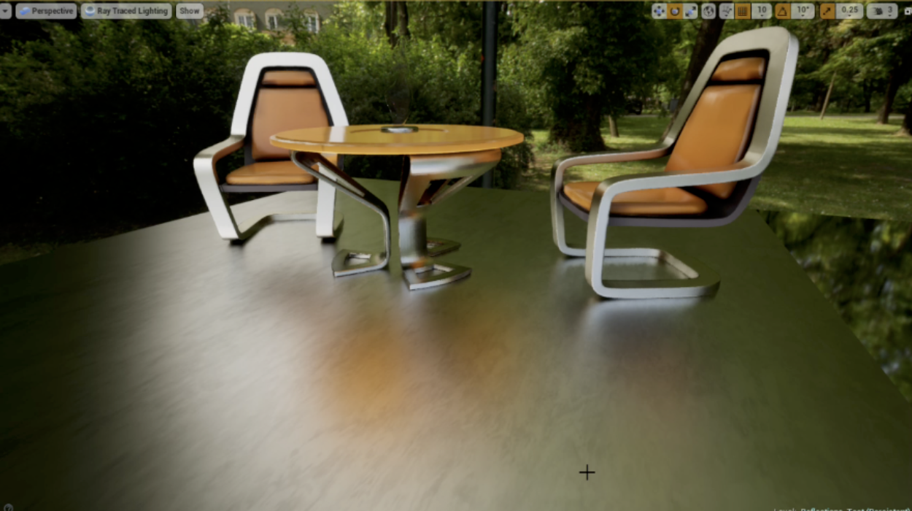
例子
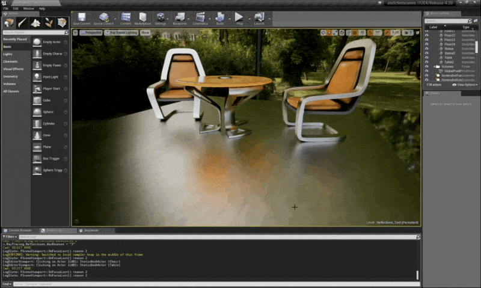
注
- 时间累积的思想受到 TAA（时间反走样）的启发（时间复用本质上提高了采样率）
- 有研究（就是闫老师的团队）着手缓减该方法在部分场合失效的问题
Implementing Spatial Filters
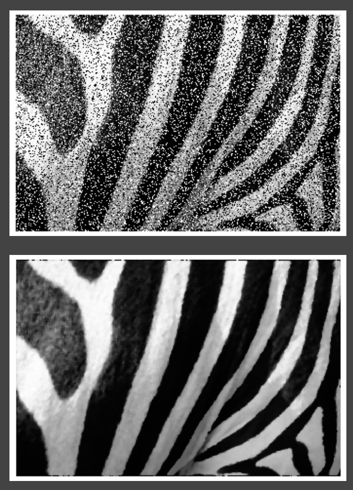
假如我们想对一张图像（做低通）滤波，也就是要移除图像中（通常是高频）的噪点。
注：我们目前只专注于空间域。
- 输入：
- 带噪点的图像 \(\tilde{C}\)
- 滤波核 \(K\)（对每个像素而言值可以不同）
- 输出：滤波过的图像 \(\bar{C}\)
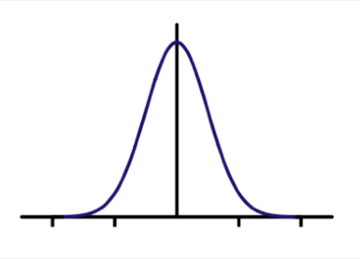
我们假设（2D）高斯滤波器的中心位于像素 \(i\)。\(i\) 领域内的任何像素 \(j\) 都会做出贡献，贡献量取决于 \(i, j\) 间距。伪代码如下：
For each pixel i
sum_of_weights = sum_of_weighted_values = 0.0
For each pixel j around i
Calculate the weight w_ij = G(|i - j|, sigma)
sum_of_weighted_values += w_ij * C^{input}[j]
sum_of_weights += w_ij
C^{output}[I] = sum_of_weighted_values / sum_of_weights
- 维护
sum_of_weights，以便最后对结果进行归一化处理 - 测试
sum_of_weights是否为零（针对其他核） - 颜色可以是多通道的
- 一般认为超过 \(3 \sigma\) 距离的像素不会产生任何贡献
Bilateral Filtering
高斯滤波的问题：同时也模糊了边界，但这是我们想要保留的高频信号。
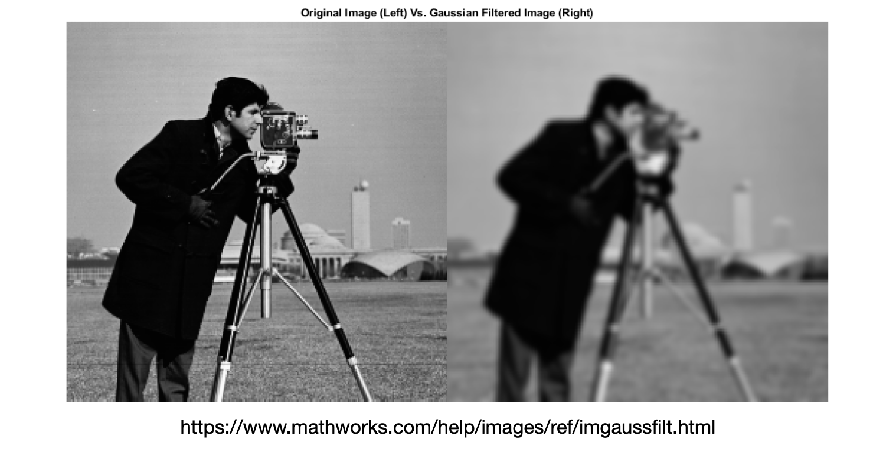
观察发现，边界 <-> 剧烈变化的颜色。于是我们有了以下解决思路：
- 若像素 \(j\) 与像素 \(i\) 相差太大，则降低 \(j\) 的贡献
- 仅向核加入更多控制
效果
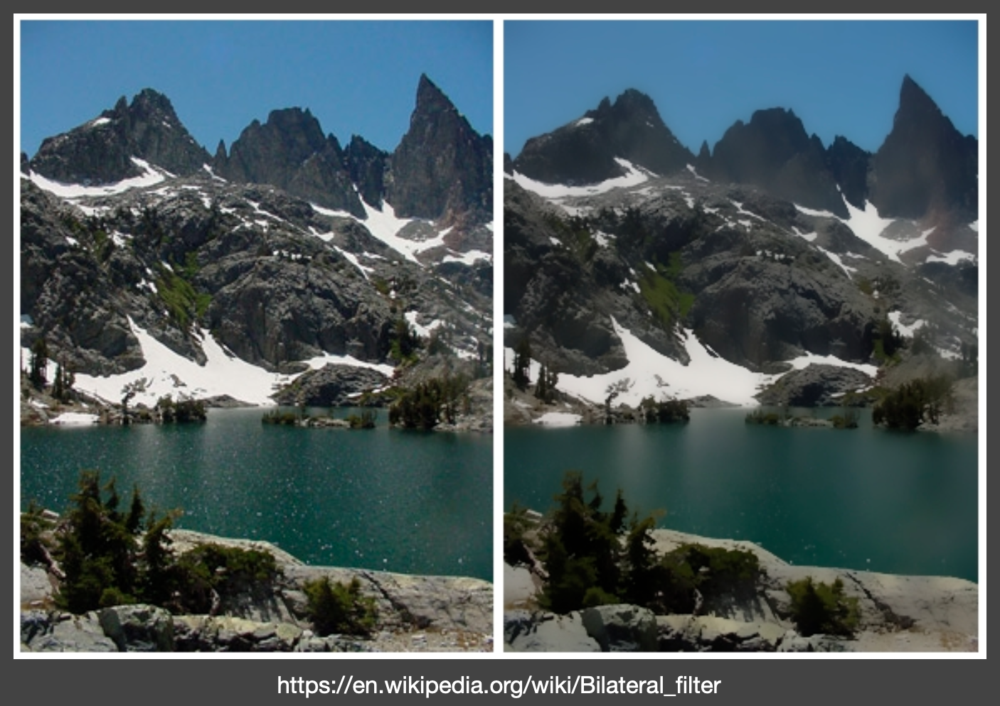
Joint Bilateral Filtering
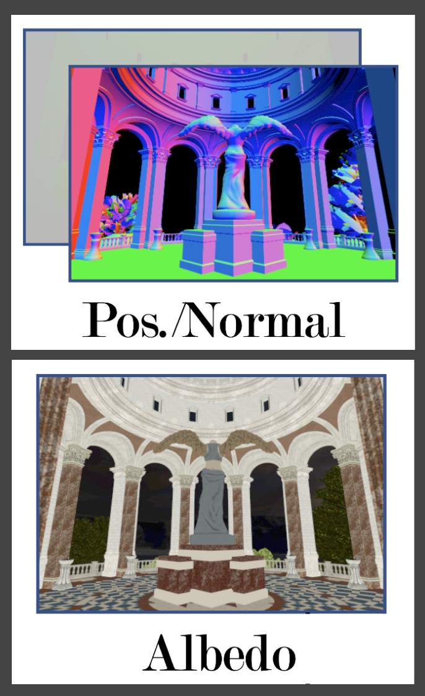
可以看到，高斯滤波仅有「距离」这一指标，而双边滤波有「位置距离」和「颜色距离」两个指标。那么为了得到更好的滤波效果，我们是不是可以引入更多的特征呢？这便是联合双边滤波(joint bilateral filtering)（或跨双边滤波(cross bilateral filtering)）所做的事。
该技术很适合用在路径追踪渲染结果的去噪上，因为 G-buffers 中保留了很多特征，包括法线、深度、位置、对象 ID 等大多数与几何相关的属性。且这些特征是无噪声的(noise-free)，因为它们和光线的多次弹射无关。
注
- 指标本身无需归一化，因为滤波时就做好了归一化
-
- 任何能随「距离」增长而衰减的函数都是可行的
- 比如（绝对值）指数函数、（裁剪后的）余弦函数等
高斯不是唯一的选择：
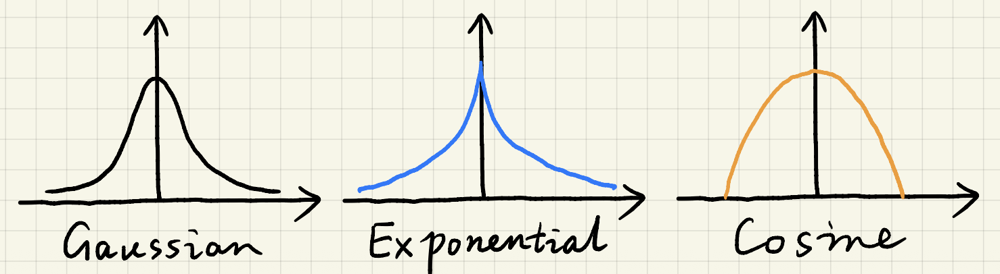
例子
假如我们仅考虑深度、法线和颜色。那我们为什么不去模糊下图这些点之间的边界呢？
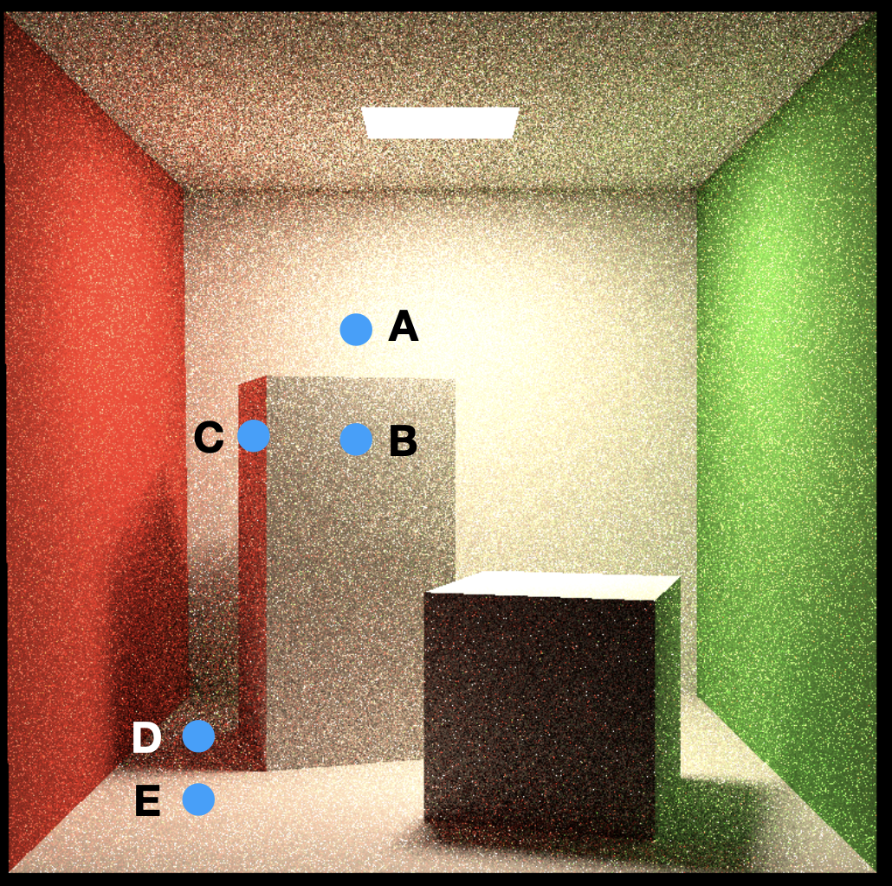
- A 和 B：深度不同
- B 和 C：法线不同
- D 和 E：颜色不同
Implementing Large Filters
回忆一下：在滤波过程中，对于每个像素，我们需要遍历 NxN 大小的邻域。滤波器大小较小时，这样做是可以接受的；但滤波器很大的话，那计算成本就太大了。为此，下面提供一些解决方案。
-
单独的趟次(separate passes)
- 对于一个 2D 高斯滤波器，将其划分为一个水平趟次（1xN）和一个垂直趟次（Nx1）
- 查询次数：N2 -> N + N
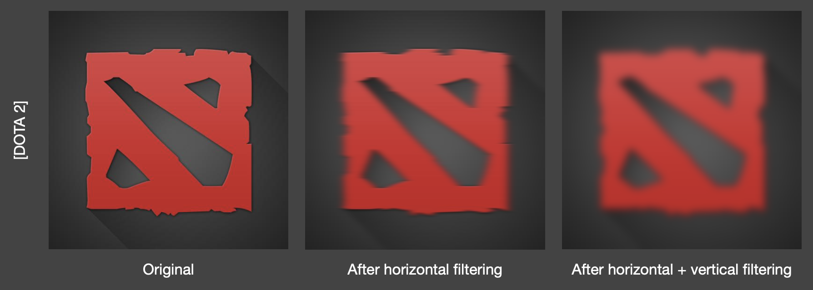
- 更深层的理解：将一个 2D 高斯滤波器分为两个 1D 高斯滤波器
- 2D 高斯滤波核是可分离的：\(G_{2D}(x, y) = G_{1D}(x) \cdot G_{1D}(y)\)
-
滤波 == 卷积，于是：
\[ \iint F(x_0, y_0)\, G_{2D}(x_0 - x, y_0 - y)\, dx\, dy = \int \left(\int F(x_0, y_0)\, G_{1D}(x_0 - x)\, dx \right) G_{1D}(y_0 - y)\, dy \] -
因此，分离的趟次需要可分离的滤波核（即理论上，双边滤波器无法单独实现）
-
渐进增长的大小(progressively growing sizes)
- 思路：使用渐进增长的大小进行多次滤波
-
a-trous 小波（就是一个滤波器）
- 多次处理，每次使用 5x5 滤波器
- 样本间的间隔逐渐增大（\(2^i\)）
- 比如 \(64^2\) 大小的滤波器变为了 \(5^2 \times 5\)
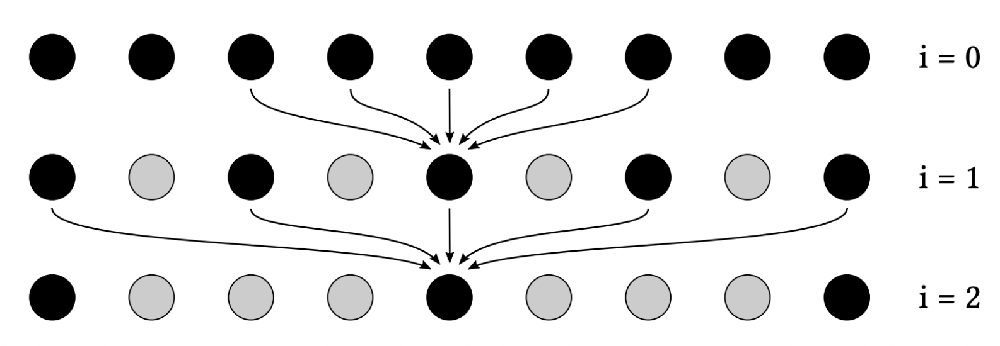
-
更深层的理解：
- 采用增长的大小是因为：应用更大的滤波器 == 移除更低频的信号（左图）
- 跳过某些采样点之所以是安全的，是因为：采样 == 重复频谱(spectrum)（右图）
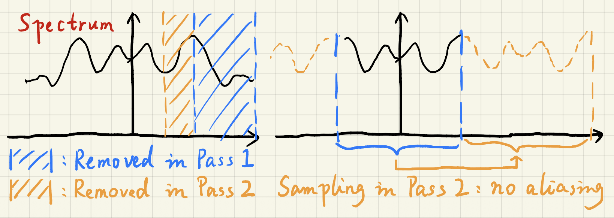
-
问题：可能会保留一些格子状的瑕疵
注
上述滤波方法也可用在对 PCSS、SSR 等的去噪上。
Outlier Removal
需要注意的是，滤波并非万能。有时滤波后的结果仍会带有噪声，甚至出现块状(blocky)瑕疵，这主要是由极端明亮的像素点（异常点(outliers)）引起的。
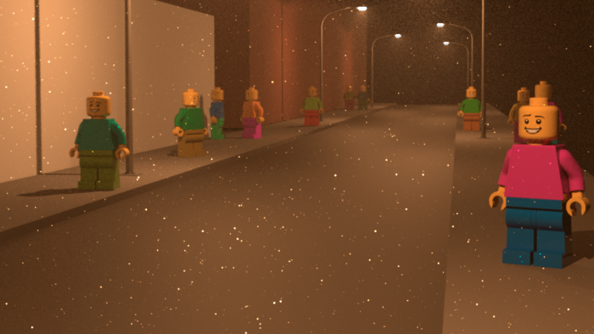
好消息是，我们可以在滤波前就移除这些异常点。
-
异常点检测
- 对于每个像素，查看其邻域（比如 7x7 大小）
- 计算均值和方差
- 在 \([\mu - k\sigma, \mu + k\sigma]\) 范围外的值 -> 异常点
-
异常点移除
- 将任何在上述范围之外的值约束(clamp)在这一有效范围内
- 注意：这并不等于抛弃（设置成零值）这些异常点
- 这和之前介绍的
复习：时间约束(temporal clamping)
之前讲时间累积/滤波时也提到过类似的概念——直接使用上一帧的颜色可能会带来拖尾效果，原因是 \(C^{(i-1)}\) 可能和 \(\bar{C}^{(i)}\) 完全不一样。于是在时间复用中，我们将 \(C^{(i-1)}\) 约束到和 \(\bar{C}^{(i)}\) 足够接近：
- 时间约束是噪点与拖尾问题之间的权衡
- 注意约束方向是从 \(C^{(i-1)}\) 到 \(\bar{C}^{(i)}\)，反过来是不行的！
Specific Filtering Approaches for RTRT
Spatiotemporal Variance-Guided Filtering (SVGF)
Recurrent AutoEncoder (RAE)
评论区